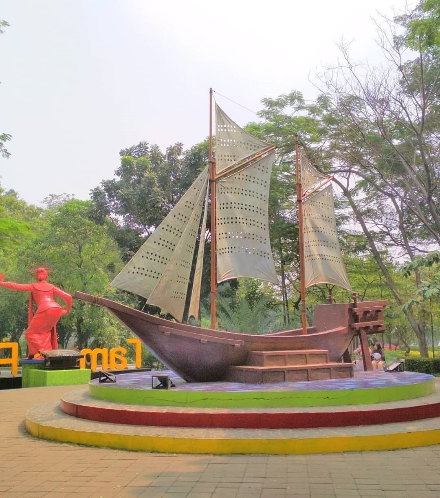
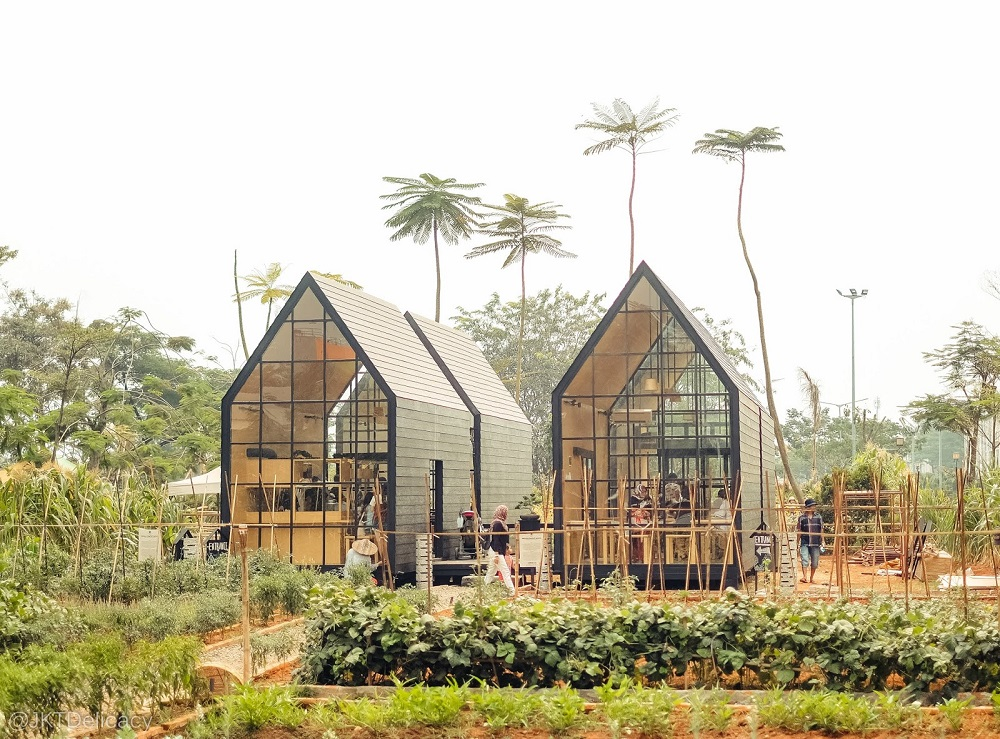

Sejarah mencatat lahirnya Tangerang bermula dari sebutan kepada sebuah bangunan tugu berbahan dasar bambu yang didirikan oleh
Pangerang Soegiri, putra Sultan Ageng Tirtayasa dari Kesultanan Banten. Tugu tersebut terletak di bagian Barat Sungai Cisadane
yang diyakini saat ini berada di wilayah kampung Gerendeng. Oleh masyarakat sekitar, bangunan tugu tersebut disebut "tengger"
atau "tetengger" yang dalam bahasa sunda berarti tanda atau penanda.
Sesuai dengan julukannya, fungsi dari tugu tersebut memang sebagai penanda pembagian wilayah antara Kesultanan Banten dengan
pihak VOC Belanda. Dimana, wilayah kesultanan Banten berada di sebelah barat dan wilayah yang di kuasai VOC di sebelah timur
sungai Cisadane.
Hingga pada sekitar tahun 1652. Kala itu penguasa Banten mengangkat tiga orang maulana, yang diberi pangkat Aria. Ketiga maulana
tersebut merupakan kerabat jauh Sang Sultan yang berasal dari Kerajaan Sumedang Larang, bernama Yudhanegara, Wangsakara dan Santika.
Ketiganya diminta dan diutus untuk membantu perekonomian Kesultanan Banten dengan melakukan perlawanan terhadap VOC yang semakin
merugikan Kesultanan Banten dengan sistem monopoli dagang yang diterapkannya.
Nama wilayah Tangerang menjadi nama resmi pertama kali pada masa pendudukan Jepang tahun 1942-1945. Pemerintah Jepang saat itu sempat
melakukan pemindahan pusat pemerintahan Jakarta Ken (wilayah administratif setingkat Kabupaten) ke Tangerang yang dipimpin oleh Kentyo
M. Atik Soeardi. Peristiwa ini berdasarkan kepada keputusan Gunseikanbu, yang merupakan pimpinan Departemen Militer Jepang, tanggal 9
boelan 11 hoen syoowa 18 (2603) Osamu Sienaishi 1834. Keputusan tersebut juga akhirnya menunjuk Atik Soeardi untuk menjabat pembantu
Wakil Kepala Gunseibu Jawa Barat dan Raden Pandu Suradiningrat menjadi Bupati Tangerang (1943-1944).
Seiring berjalannya waktu, daerah Tangerang yang kala itu berbentuk Kabupaten Daerah Tingkat II mengalami perkembangan yang sangat pesat.
Letaknya yang berbatasan langsung dengan Ibu Kota menjadikan beberapa kecamatan yang berbatasan langsung menjadi pusat segala kegiatan
baik Pemerintah, Ekonomi, industri dan Perdagangan, Politik, Sosial Budaya.
Hal tersebut mendasari pemerintah memandang perlu untuk mengatur penyelenggaraan pemerintahan secara khusus. Maka pada tanggal 28 Februari
1981 keluar Peraturan Pemerintah Nomor 50 Tahun 1981 tentang Pembentukan Kota Administratif Tangerang, dengan demikian Kecamatan Tangerang,
Kecamatan Batuceper, Kecamatan Ciledug, Kecamatan Benda dan Kecamatan Jatiuwung masuk ke dalam Wilayah Kota Administratif Tangerang.
Dalam perjalanan kurun waktu 12 Tahun Kota Administratif Tangerang kembali menunjukan perkembangan dan pertumbuhan yang sangat pesat disegala
bidang, baik dalam penyelenggaraan pemerintahan, pelaksanaan pembangunan dan pembinaan kemasyarakatan. Dinamika kehidupan perekonomian kota
ditandai dengan berkembangnya unit-unit usaha dan perdagangan termasuk pertumbuhan jumlah penduduk yang mencapai 921.848 jiwa, dengan laju
pertumbuhan mencapai 8,27 % yang diakibatkan derasnya arus urbanisasi yang pada akhirnya berpengaruh bagi kehidupan sosial - politik, budaya
dan perekonomian masyarakat.
Perkembangan tersebut sejalan dengan Peraturan Daerah (Perda) Kabupaten Daerah Tingkat II Tangerang Nomor 4 Tahun 1985 tentang Rencana Umum
Tata Ruang Kota yang peruntukannya sebagai daerah industri, perumahan, perdagangan, dan jasa dalam skala lokal, regional, nasional dan
internasional.
Dengan perubahan struktur Pemerintah Kota Administratif tetap tidak dapat mendukung dinamika pelayanan yang dibutuhkan oleh masyarakat Kota Tangerang,
terlebih lagi aparat Pemerintah Kota hanya berjumlah 737 orang yang terdiri dari 331 PNS dan 406 status magang/honor daerah. Untuk itulah dalam rangka
menunjang pelaksanaan pembinaan dan pengelolaan Kota Administratif diperlukan struktur Pemerintahan yang lebih tinggi dari status Kota Administratif
yaitu dengan membentuk daerah otonom Kotamadya Daerah Tingkat II yang mengatur rumah tangganya sendiri.
Proses pembentukan Kotamadya Daerah Tingkat II Tangerang diawali dengan adanya aspirasi sejumlah tokoh masyarakat yang disampaikan kepada Bpk. Drs. H. YITNO sebagai Walikota Administratif Tangerang kemudian direstui oleh Bapak H. TADJUS SOBIRIN sebagai Bupati Kepala Daerah Tingkat II Tangerang pada waktu itu, selanjutnya diproses melalui DPRD Kabupaten Daerah Tingkat II Tangerang.
Proses pembentukan Kotamadya Daerah Tingkat II Tangerang secara keseluruhan berlangsung selama 5 tahun 8 bulan 27 hari yaitu sejak tanggal 1 Juni 1987 sampai dengan 28 Februari 1993 dan secara resmi Kotamadya Daerah Tingkat II Tangerang menjadi Daerah Otonom Ke-25 di Jawa Barat dan Ke-312 se Indonesia. Selanjutnya Kotamadya Daerah Tingkat II Tangerang diresmikan oleh Bapak Jenderal TNI (Pur) RUDINI (Menteri Dalam Negeri Republik Indonesia) pada hari Minggu tanggal 28 Februari 1993 bertepatan dengan bulan Suci Ramadhan 1413 H sekaligus melantik Bapak Drs. H. DJAKARIA MACHMUD sebagai Pejabat Walikotamadya Kepala Daerah Tingkat II Tangerang.
Satu tahun kemudian, berdasarkan hasil pemilihan DPRD Kotamadya Daerah Tingkat II Tangerang Bapak Drs. H. DJAKARIA MACHMUD terpilih sebagai Walikotamadya Kepala Daerah Tingkat II Tangerang yang pertama.
Demikian sejarah singkat berdirinya Kotamadya Daerah Tingkat II Tangerang dan sejalan dengan telah ditetapkannya Undang-undang Nomor 22 Tahun 1999 tentang Pemerintahan Daerah sebagaimana telah diubah dengan Undang-undang Nomor 32 tahun 2004 tentang Pemerintahan Daerah maka sebutan Kotamadya Daerah Tingkat II Tangerang menjadi Kota Tangerang.
Kota Tangerang
Wisata Alam Kota Tangerang
Taman Tebing Koja

Taman Tebing Koja atau dikenal pula dengan nama Kandang Godzilla, adalah obyek wisata alam yang cukup populer di kabupaten Tangerang
dan sekitarnya. Tempat dinamakan Kandang Godzilla karena terdapatnya seonggok tebing yang menyerupai kepala monster Godzilla.
Beralamat dikampung Koja, Desa Cikuya, Kecamatan Solear, Kabupaten Tangerang, Banten.
Harga tiket masuk: Rp. 5.000 / orang
Buka: jam 06:00 - 18:00 setiap hari
Taman Potret
Yakni sebuah taman yang tepat untuk berselfie, serta bermain dan berkulineran. Jika Taman Gajah Tunggal memiliki Ikon gajah yang terbuat dari ban bekas, maka Taman Potret memiliki patung penari. Patung Penari Lenggang tersebut didominasi dengan warna merah, dan saat ini patung tersebut memakai masker hal tersebut untuk mengingatkan kita supaya jangan lengah dan terus gunakan masker. Lokasi Taman Potret berada di sisi barat Tangcity Mall. Alamat lengkapnya yakni di Jl. Jend. Sudirman, Babakan, Kota Tangerang, Banten.
Hutan kota

Objek wisata ini adalah Taman Kota milik bumi Serpong Indah, terdiri dari 1, 2, dan 3. Saat anda menginjakkan kaki disini. maka, satu kata
akan tercipta yaitu damai. Suasana dan nuansanya memang benar-benar sangat tenang.
Di wilayah pertama hutan ini memiliki luas sekitar 9 hektar. Dengan ditumbuhi kurang lebih 7000 pohon. Seperti, pohon Bintaro, pohon meranti
dan pohon pulai. Selain itu, objek wisata kebanggaan rakyat Tangerang ini mempunyai 60 jenis tanaman.
Arumdalu Fram
Arumdalu farm berada di belakang bangunan kaca beratapkan segitiga. Didalam bangunan kaca ini kalian dapat duduk santai
sambil menikmati pemandangan bunga matahari disekitarnya. Bangunan ini di buat cukup unik, sehingga sangat cocok untuk
kalian yang ingin berburu foto yang beda dari biasanya. Diarea taman bunga matahari, telah disediakan lorong jalan setapak
bagi anda yang ingin jalan jalan dan berfoto dengan bunga matahari.
Arumdalu farm beralamat di Scientia Square Park, Jl. Scientia Boulevard, Curug Sangereng, Kec. Klp. Dua, Tangerang, Banten, Indonesia
Jam buka : Hari biasa 10.00-17.00 WIB ; Hari Libur 07.00-19.00 WIB
Tiket masuk : Rp 20.000 dan kalian sudah mendapatkan satu gelas teh bunga telang yang sangat segar.